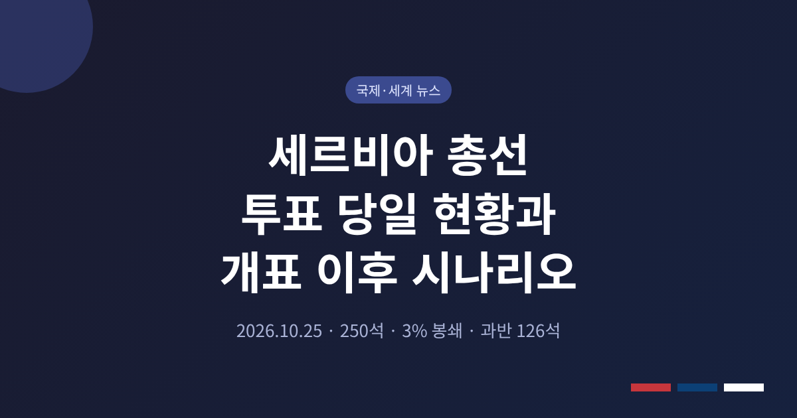
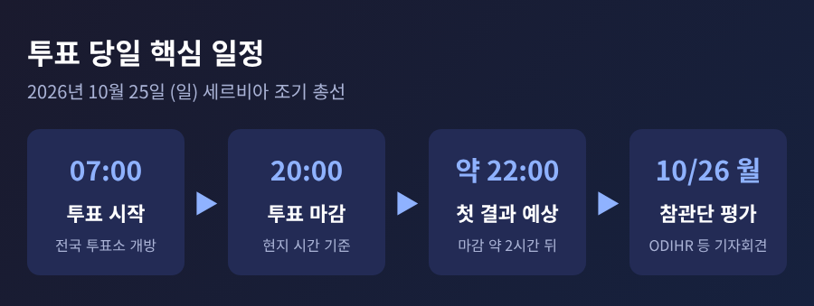
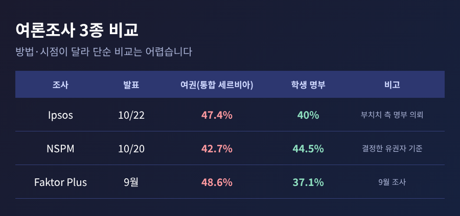
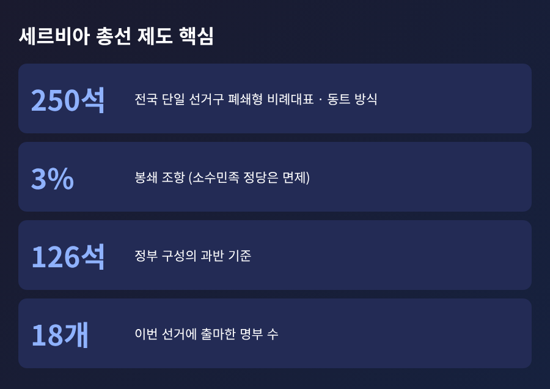
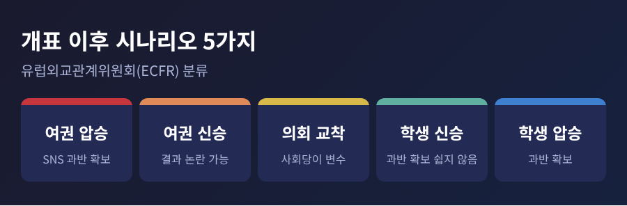

이번 글에서는 2026년 10월 25일 치러진 세르비아 조기 총선의 투표 당일 상황과 선거제도, 개표 이후 시나리오를 정리해 보겠습니다. 이 글을 쓰는 시점에는 공식 투표율과 출구조사, 개표 결과가 확인되지 않았습니다. 따라서 승패를 단정하지 않고 확인된 사실과 앞으로의 갈림길을 나누어 적습니다.
3줄 요약
2026년 10월 25일 일요일, 세르비아 전역에서 투표가 시작되었습니다. 투표소는 현지 시간 오전 7시에 문을 열었고 오후 8시에 닫혔습니다. 알자지라와 로이터는 마감 약 두 시간 뒤에 첫 결과가 나올 것으로 전했습니다.
이른 아침부터 베오그라드와 노비사드의 투표소에는 수백 명이 줄을 섰습니다. 로이터에 따르면 학생 명부 대표 일리야 스르다노비치는 투표 후 줄 선 모습이 최근 세르비아 역사에서 기록적인 투표율을 시사한다고 말했습니다. 다만 공식 투표율은 제가 확인한 자료에 없습니다. 후보 측의 해석일 뿐이라는 점을 감안하셔야 합니다.
현장 목소리도 갈렸습니다. 베오그라드의 30세 유권자 아나 씨는 "학생들이 불렀기 때문에 일찍 나왔다"고 했습니다. 반대로 로마(집시) 유권자 하티자 씨는 "아이들에게 평화와 일자리가 필요하고, 그것을 줄 사람은 부치치뿐"이라고 말했습니다. 두 문장이 지금 세르비아의 균열을 거의 그대로 보여 줍니다.

SNS(세르비아진보당)는 2012년부터 집권해 왔습니다. 2023년 12월 조기 총선에서는 SNS 주도 명부가 250석 중 129석을 얻어 과반을 회복했습니다. 이번 선거는 원래 2027년 12월로 잡혀 있던 일정을 부치치 대통령이 9월에 앞당긴 것입니다.
부치치는 대통령직을 사임하고 총리 후보로 직접 나섰습니다. 10년 넘게 총리와 대통령을 오간 인물이 의회 선거에 자신의 이름을 건 셈입니다. 이를 두고 알자지라는 헝가리에서 4월 오르반 총리가 패배한 일과 견주어 보도했습니다.
상대는 학생 명부입니다. 교수, 배우, 농민 등 대체로 낯선 인물 약 250명으로 구성되었고, 공식 지도자는 두지 않았습니다. 예전엔 정치와 거리를 두던 젊은 세대가 지금은 운동의 중심에 서 있습니다. 투표율이 승부를 가를 것이라는 분석이 나오는 이유입니다.
발단은 2024년 11월 노비사드 철도역 지붕 붕괴입니다. 16명이 숨졌고, 부실 시공에 부패가 있었다는 의혹이 제기되었습니다. 시위는 거의 2년째 이어졌고, 선거 사흘 전인 10월 22일에는 베오그라드 중심가에 약 15만 명이 모였다고 알자지라는 전했습니다.
양측의 주장은 이렇게 맞섭니다.

여론조사도 엇갈립니다. Ipsos는 10월 22일 발표에서 부치치의 통합 세르비아 47.4%, 학생 명부 40%로 나왔습니다. 이 조사는 부치치 측 명부가 의뢰한 것으로 전해집니다. 반면 NSPM은 학생 44.5%, 여권 42.7%로 학생이 앞섰고, 9월 Faktor Plus는 여권 48.6%, 학생 37.1%였습니다. 조사 방법과 시점이 달라 하나로 읽기는 어렵습니다.
세르비아 국민의회 250석은 전국을 하나의 선거구로 묶은 폐쇄형 비례대표제로 뽑습니다. 정당이 정한 명부 순서대로 의석이 돌아가며, 배분에는 동트 방식을 씁니다. 득표율 3%를 넘지 못한 명부는 의석을 얻지 못하지만, 소수민족 정당은 이 기준에서 면제됩니다.
과반은 126석입니다. 이번에는 18개 명부가 출마했습니다. 군소 명부가 3%를 넘는지, 소수민족 명부가 몇 석을 가져가는지가 과반 계산을 흔들 수 있습니다. 1위 득표가 곧 정권 교체나 유지를 뜻하지 않는다는 말입니다.

선거 공정성은 이번에도 쟁점입니다. RFE/RL은 거리나 번지가 없는 등록 유권자가 50만 명 이상이고, 사회복지센터 같은 공공시설에 수백 명이 등록된 사례가 있다고 보도했습니다. 보스니아와 코소보의 세르비아계 유권자 명부가 늘었다는 점도 의혹의 근거로 거론됩니다. 정부 측 반박은 해당 기사에서 확인되지 않습니다. 정부는 앞서 ODIHR(유럽안보협력기구 민주제도인권사무소) 권고의 70% 이상을 이행했다고 주장했지만, OSCE 중간 보고서는 모두 이행했다는 주장과 배치된다고 전해집니다.
한편 개표 자체에서 대규모 부정의 증거를 찾지 못했다는 평가도 있습니다. 유럽 서발칸 매체는 야당과 참관단이 문제 삼는 것은 투표 전 환경, 곧 여당과 국가기구의 결합, 언론의 불균형, 유권자 명부 불신이라고 정리했습니다. 구분해서 보셔야 합니다.
국제 참관은 OSCE 참관인 약 300명이 활동하고, 유럽의회 대표단 7명이 ODIHR 참관단에 합류했습니다. 예비 평가는 10월 26일 월요일 베오그라드 기자회견에서 공동 성명으로 나올 예정입니다.
세르비아의 EU 가입 협상은 2021년 말 이후 새 챕터가 열리지 않았습니다. 민주주의 후퇴, 코소보 관계 미해결, 대러시아 제재 불참이 이유로 거론됩니다. 러시아는 전통적 동맹이자 주요 천연가스 공급국이고, 중국은 주요 투자국입니다. 부치치는 EU의 문을 열어 두면서 이 노선을 유지하겠다고 밝혔습니다.
학생 명부는 선거 운동에서 외교를 앞세우지 않았습니다. RFE/RL에 따르면 학생 운동은 부패 척결에 집중하며, 대러 제재에는 반대하고 코소보 독립 불인정 입장도 지지합니다. 정권이 바뀌어도 외교 노선이 급변하리라 보기는 어렵다는 이야기입니다.

유럽외교관계위원회(ECFR)는 결과를 다섯 가지로 나눴습니다. 여권의 확실한 승리, 여권의 신승과 논란, 의회 교착, 학생 명부의 신승, 학생 명부의 압승입니다.
정리하면 이렇습니다. 오늘 밤의 숫자보다 더 오래 남을 것은 그 숫자를 양쪽이 받아들이느냐입니다.
"이긴 쪽이 누구냐보다, 진 쪽이 승복할 수 있는 선거였느냐가 남는다."
10월 26일 참관단의 평가와 공식 개표 결과가 나오면, 이 글의 빈칸을 채워 다시 정리해 보겠습니다. 세르비아의 다음 정부가 어떤 모습이든, 지난 2년의 광장이 남긴 질문은 쉽게 닫히지 않을 것입니다.
※ 출처: RFE/RL, 알자지라, 로이터(ThePrint 전재), Eurasia Review(RFE/RL 전재), Türkiye Today, New Union Post, European Western Balkans, 위키백과. 본 글은 2026년 10월 25일 투표 진행 중 확인된 정보 기준이며 결과는 확정되지 않았습니다.